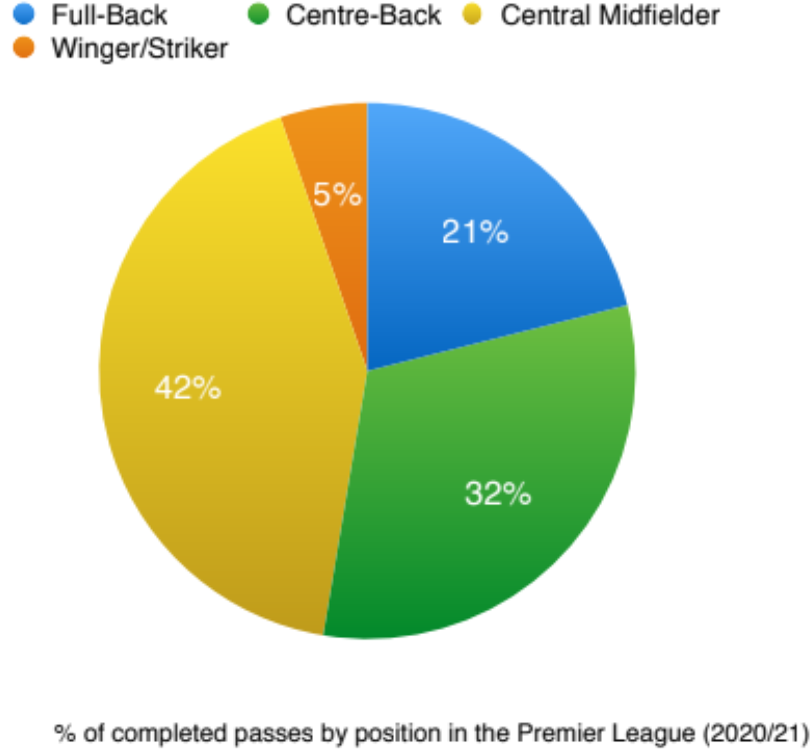
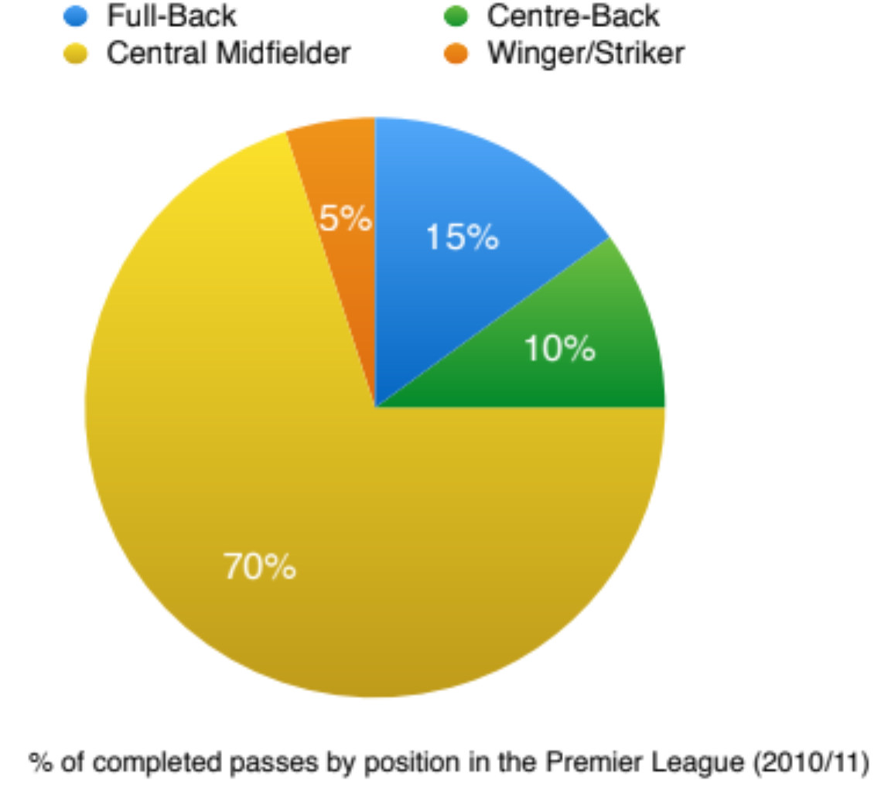
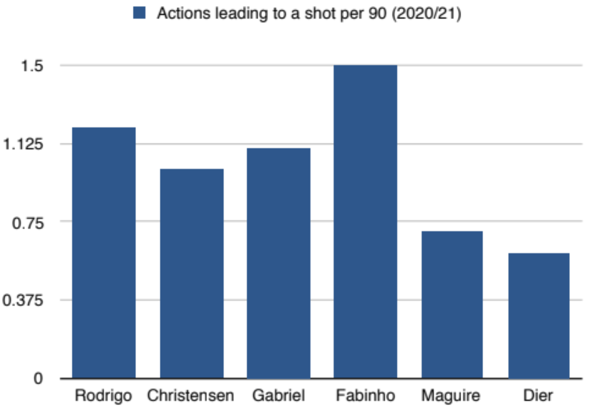
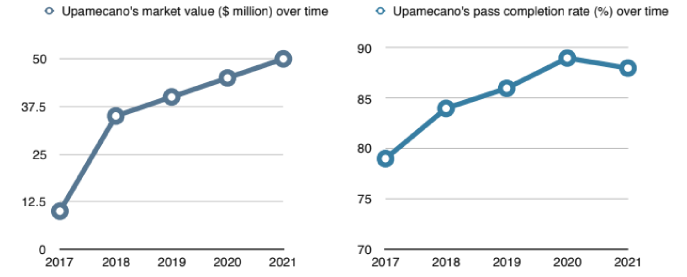

Centre-Backs are the New Playmakers
By Harry Church | March 31, 2021

“Obviously I’m looking for shape and size, and someone who heads it and kicks it”. - Barry Dunn, Millwall FC Chief Scout, on his ideal centre-back (2017)
Dunn’s description of the model centre-back may seem primitive, but you can’t really blame him. Growing up as a centre-back in England, I hardly found myself embracing the ‘beautiful game’. After all, this is the land of the traditional central defender; the hard-tackling, header-winning rock at the back. And with this expectation comes the inevitable discouragement of playing with the ball at your feet - “just be safe with it”, was the most common instruction I heard from my coaches.
But football is constantly changing, and with the exponential emphasis on possession based play in the today’s game, more composed, ball-playing centre-backs are becoming increasingly crucial. Below, we can see the proportion of total passes completed by different positions in the 2020/21 Premier League season:
Unsurprisingly, central midfielders lead the way for completing the most passes as they are the link between defence and attack - everything goes through them. Nonetheless, the pie chart illustrates how integral a role centre-backs have played in their side’s retention of possession in the Premier League this season; no longer are they being told to ‘just be safe with it’. What’s even more impressive is that over 70% of Premier League sides this season have consistently deployed three central midfielders (mostly in a 4-2-3-1), whereas only three teams have deployed more than two centre-backs at one time (in either a 3-5-2 or 3-4-2-1). In this way, centre-backs are largely outnumbered by central midfielders in the Premier League, so the mere 10% disparity between them seems all the more slim.
Moreover, if we look at the same pie chart for the 2010/11 Premier League season, we can see the extent to which the role of the centre-back has transformed:
Over the past decade, then, centre-backs have accounted for an additional 22% of the total passes completed in the Premier League per season. Even more interestingly, the number of completed passes by central midfielders as a percentage of the total has decreased by 28%. This begs the question: are centre-backs gradually blurring the line between the traditional defender and the low-lying playmaker? If so, are ball-playing centre-backs like Virgil Van Dijk slowly fulfilling the same distribution role as was famously held by Andrea Pirlo? Liverpool fans would certainly like to think so - last season, Van Dijk’s 89% pass completion rate for Liverpool equalled that of Pirlo during the latter’s time at Juventus.
But it goes both ways - while centre-backs are becoming the new playmakers, the 2020/21 season has shown that playmakers are equally beginning to transition into the central defensive role. Staying with Liverpool, we can look at Fabinho, a defensive midfielder with a propensity for pulling strings with the ball, and disrupting opponents’ attacks without. Yet, after both Van Dijk and defender Joe Gomez were ruled out due to injury this season, manager Jurgen Klopp was forced to deploy Fabinho in an unfamiliar centre-back role. And the decision paid off. In fact, Fabinho’s emergence as a centre-back has probably been the silver lining to Liverpool’s otherwise dismal season. Prior to his own injury in January, Fabinho firstly steered Liverpool to six clean sheets. Secondly, he demonstrated the benefits of transplanting a passing central midfielder in at centre back. The graph below depicts the actions leading to a shot per 90 minutes for one centre-back from each ‘Big 6’ Premier League club this season based on minutes played: 
As we can see, Fabinho leads the closest comparable centre-back by 0.3 actions. This means that, despite his new position in a far deeper role, Fabinho has consistently created more chances than any other big-team centre-back this season. By extension, Fabinho shows that selecting a central midfielder for the centre-back role can maximise expected goals (XG). And while you can argue that Eric Dier is also a former central midfielder, and yet he creates the least opportunities, let’s not forget, it’s Eric Dier.
Evidently, the role of the centre-back is evolving, and the scouts of more and more European clubs are even placing heightened monetary value on a centre-back’s passing ability. Take 22 year-old RB Leipzig centre-back Dayot Upamecano, who will be joining Bayern Munich this July for a fee of $50 million. He has been praised for his composure on the ball just as much as his tenacity when defending. And as the graphs below illustrate, the upward trend of Upamecano’s market value over time largely correlates with the increase in his pass completion rate:
So let’s go back to that quote from Millwall FC’s Chief Scout, Barry Dunn. Dunn’s effectively summarises what has long been the basic attitude toward developing centre-backs in England. His traditional viewpoint is not surprising - after all, he’s a 68 year-old ex-footballer. Instead, what I find particularly interesting about the quote is that, in the same year of 2017, Millwall hired a joint Chief Scout to accompany Dunn. This man was Alex Aldridge, a 27 year-old without any footballing experience, but with extensive statistical knowledge. And since 2017, Millwall have averaged significantly more possession per season, and adhere to a more modern style of play. This can’t be a coincidence. Attitudes toward traditional roles in football are shifting, and I think this is symbolic of a fundamental change currently occurring in European youth football - slowly, the distinctions between different positions are being blurred. As Johan Cruyff once said, “attackers should be able to play as defenders, and defenders as attackers”.